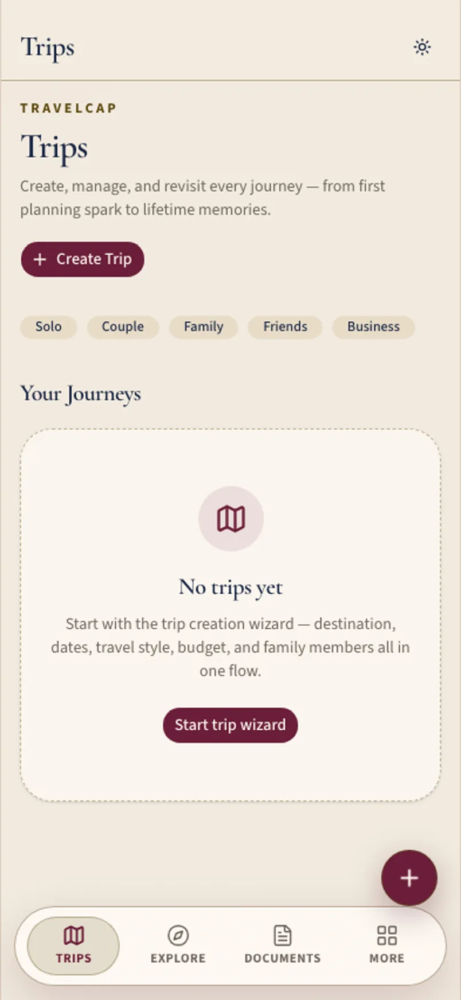

Fictional example Fictional example. People, screenshots, and numbers are made up — not a real customer story.
TravelCap · Dubai, UAE
How Hassan stopped re-finding the same visa PDF
Hassan opens trips on phone in rides, iPad in lounges, laptop at the hotel desk.
“The visa lives with the trip.”

Before and after
Made-up numbers for a fictional week — not a real customer case.
Before
After TravelCap
A fictional day with Hassan
Sample screens for the story — not a recorded real session.
-
Airport phone
In the ride to the airport Hassan opens the trip on his phone — visa pinned with the itinerary, not lost in email.
-
Lounge iPad
Lounge iPad shows documents without digging through folders named “final_final_visa.”
-
Hotel laptop
Hotel desk laptop drafts the next trip while this one is still warm; continuity instead of starting from zero.
-
Expenses
Expenses on the laptop are illustrative — enough to reclaim the month without a shoebox of receipts.
-
Phone
Phone tomorrow view. The visa lives with the trip. He sleeps.
Watch it
A day across devices — silent walkthrough with captions. No autoplay with sound.
Read transcript
Hassan uses phone, iPad, laptop across a business hop. Fictional.
Features Hassan uses
Fictional example. People, screenshots, and numbers are made up — not a real customer story.